tableaux Excel et python
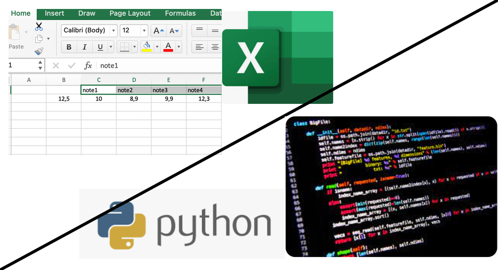
Prérequis:
- Cours sur les tableaux et listes Python: page du site
Partie 1: Tableaux et traitement sur Excel
Commencer par remplir les notes de l’élève comme sur l’image ci-dessous (cellules $C2$ à $K2$)
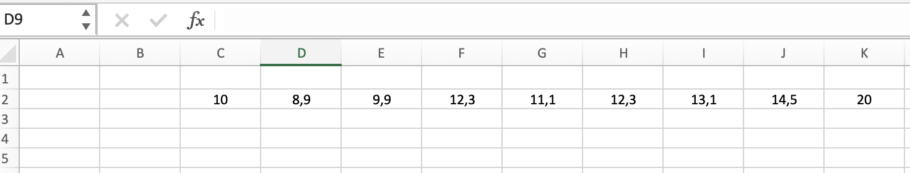
tableau de données
Ajouter une fonction pour calculer la moyenne de ces notes. Dans la cellule $B2$, ecrire le signe = puis le nom de la fonction $= moyenne($
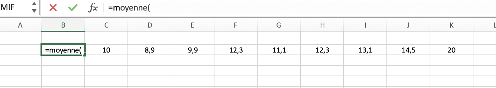
saisie de la fonction moyenne
Compléter avec la plage de cellule contenant les valeurs:
$$= moyenne(C2:K2)$$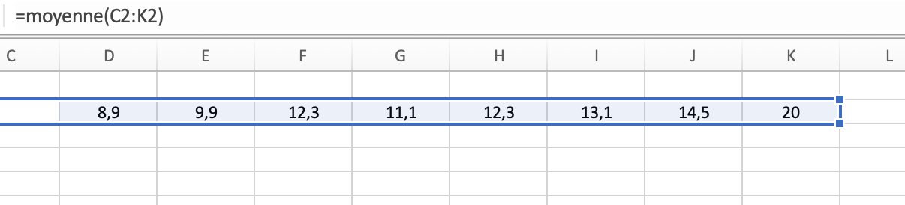
plage de valeurs de C2 à K2
La valeur moyenne comprend trop de décimales…
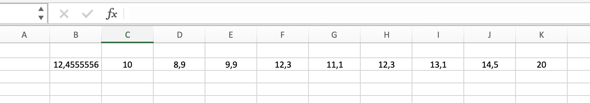
Ajouter une fonction d’arrondi:
$$= arrondi(moyenne(C2:K2);1)$$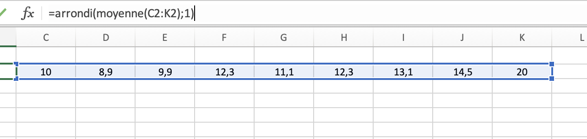
arrondir à 1 ou 2 décimale-s
Ajouter des etiquettes aux colonnes. Commencer par ecrire $note1$ dans la cellule $C1$.
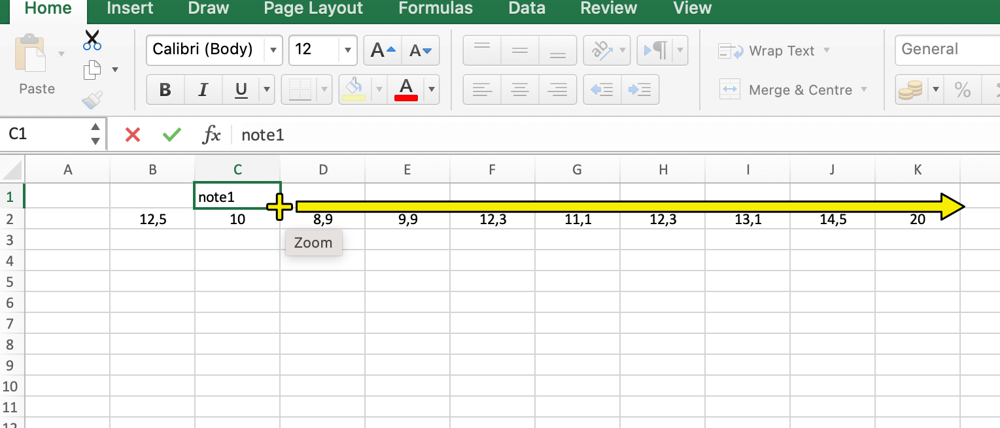
etiquette note1
Puis positionner le curseur en bas à droite dans la cellule. Et cliquer-glisser vers la droite pour reproduire la mise en forme.
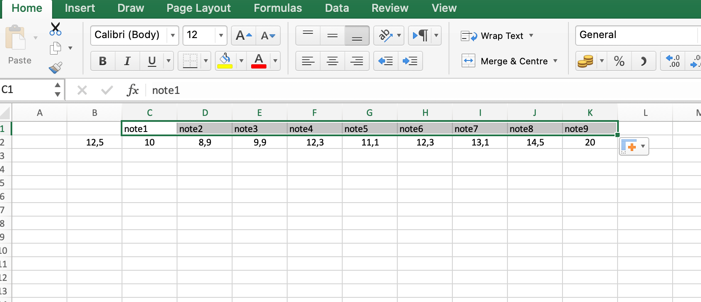
remplissage automatique des noms des colonnes
Faire la même manipulation pour obtenir des etiquettes aux lignes (eleve1, eleve2,…)
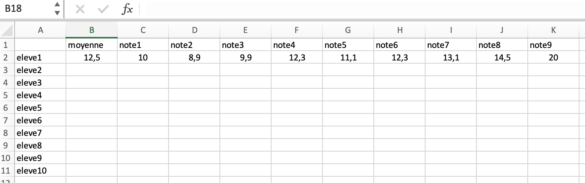
Dans la cellule $C3$, mettre une note aleatoire entre 0 et 20 avec:
$$= alea() * 20$$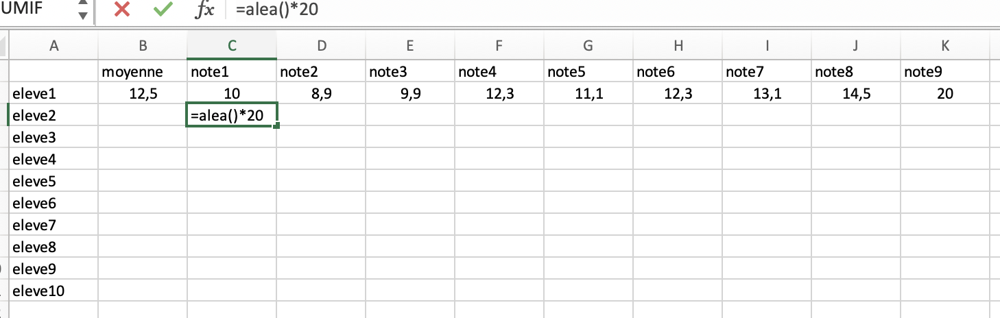
ajout d'une valeur aleatoire
La valeur contient trop de décimales.
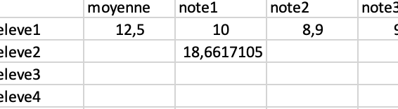
Ajouter la fonction $arrondi$ pour limiter à une seule décimale.
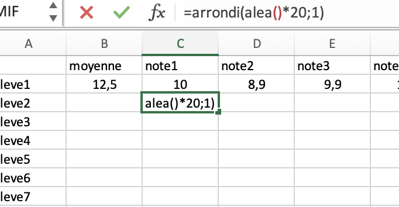
=arrondi(alea...
Cliquer-glisser avec le curseur vers la droite et vers le bas pour obtenir un tableau de valeurs aleatoires:
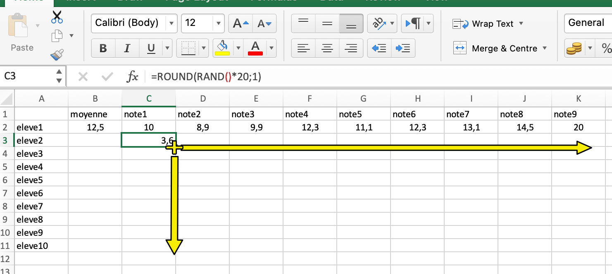
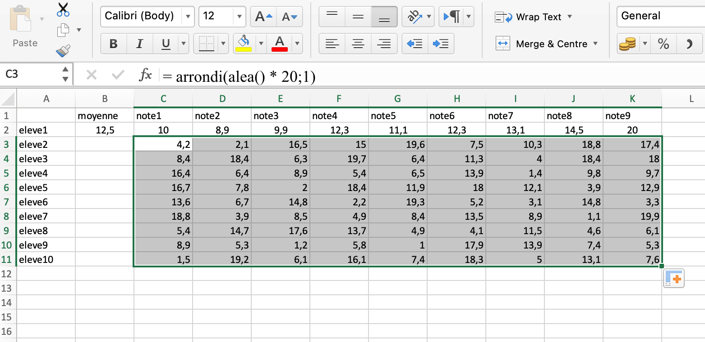
tableau de valeurs aleatoires
Puis sauvegarder le tableau avec l’extension $.csv$
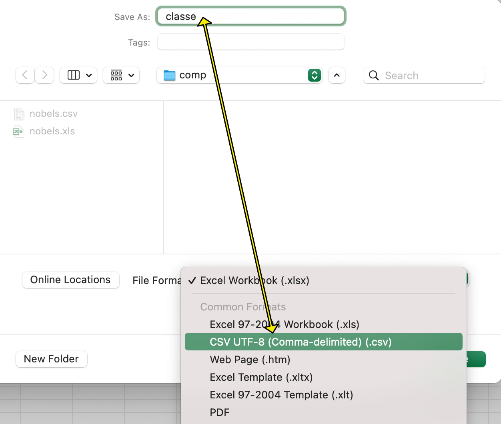
classe.csv
Ce format est echangeable entre logiciels et peut être traité en langage python (Partie 2).
Si vous l’ouvrez avec un editeur textuel (notepad++, …), vous devriez obtenir à peu près ceci:
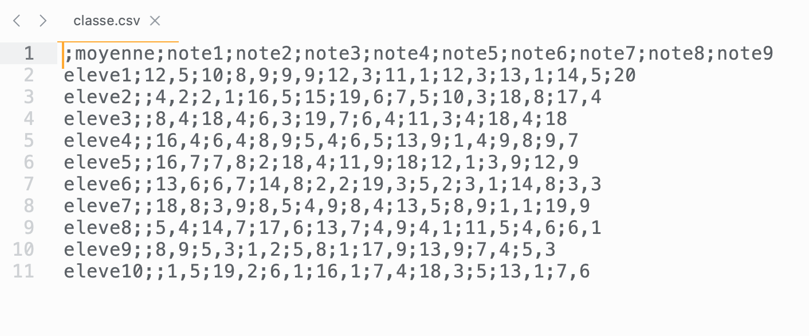
contenu du fichier classe.csv
Un fichier dans lequel les lignes représentent les $eleves$. Les valeurs sont separées par des points virgules “;”
Partie 2: Tableaux python
Traitement sur une liste
Le script suivant calcule la moyenne sur une liste de notes. La première valeur de la liste est reservée pour y placer une valeur, à la fin du programme. Les notes commencent donc à partir de l’indice 1 de cette liste:
- Voir l’animation sur Pythontutor: visualiser le parcours et traitement sur une liste de notes
list1:
Lien: pythontutor
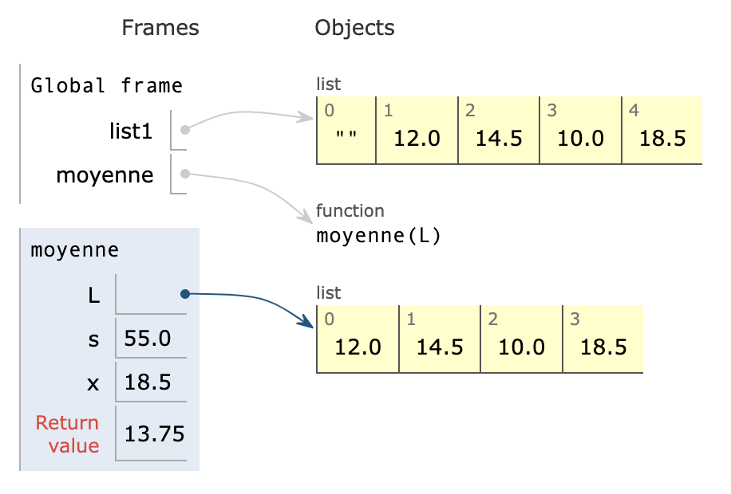
nom et valeur des variables dans pythontutor - liste
1a. Commenter le schéma ci-dessus: que signifient les flèches? Que signifient les cases bleues et jaunes?
1b. Pourquoi écrit-on l’instruction
m = moyenne(list1[1:])et nonm = moyenne(list1)?
1c Modifier le script (faire edit dans pythontutor) pour que le programme place la valeur
mdans la caselist1[0]. Noter ici l’instruction utilisée. Comment voit-on la modification dans pythontutor?
Traitement sur une table (liste de listes)
- Animation sur Pythontutor: visualiser le parcours et traitement sur une liste
Execution du script suivant sur Pythontutor
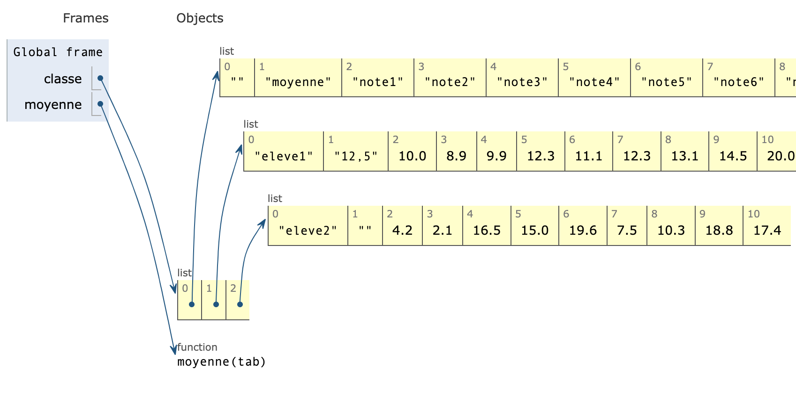
nom et valeur des variables dans pythontutor - tableau
2a. Commenter le schéma ci-dessus: que signifient les flèches? Que signifient les cases bleues et jaunes?
2b. Que contient la liste
eleve? Recopier ici son contenu.
2c. Pourquoi écrit-on l’instruction
m = moyenne(eleve[2:])et nonm = moyenne(eleve))?
2d. Modifier le script pour que le programme place la valeur m dans la case
eleve[1]. Noter ici l’instruction utilisée. Comment voit-on la modification dans pythontutor?
2e. Modifier maintenant le programme pour calculer la moyenne de l’élève 1. Comment doit-on modifier le programme?
Prolongement
Traitements sur le fichier csv importé du tableur
Telecharger et placer dans le même dossier:
- tableur_vers_python.ipynb
- fichier classe.csv
- fichier utilitaire_notes.py
Deux options sont possibles pour organiser votre dossier et vos fichiers:
- Vous pouvez placer classe.csv dans le même dossier que le notebook: Depuis le script python, ouvrez le alors avec l’instruction
with open('classe.csv', newline='') as csvfile: - ou bien dans un sous dossier
datas. Ouvrir alors avecwith open('datas/classe.csv', newline='') as csvfile:
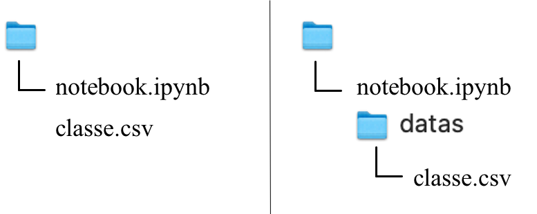
Utiliser une distribution python (jupyter notebook) en local.
- Traiter la partie 1 du notebook
- Traiter la partie 2 du notebook
- Traiter la feuille d’exercices sur les tableaux en python: lien vers le pdf